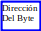
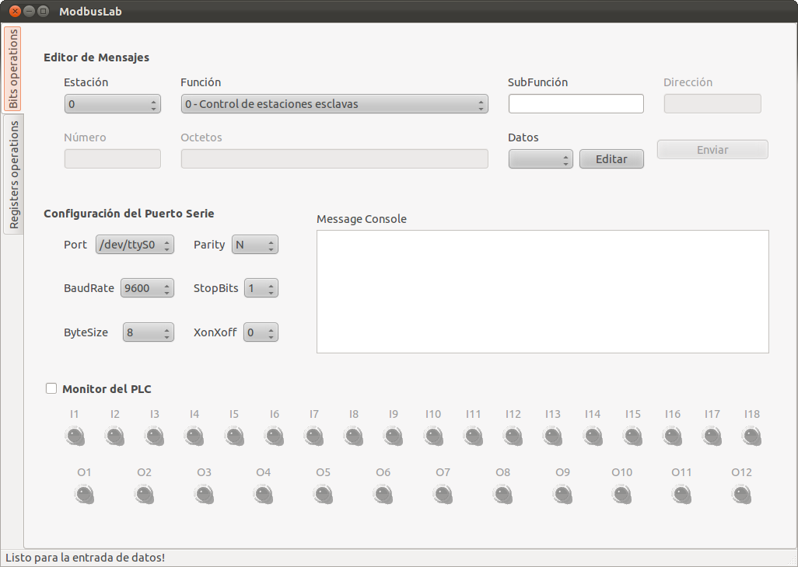
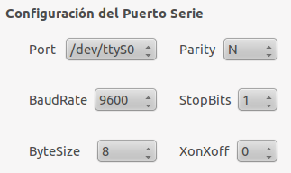
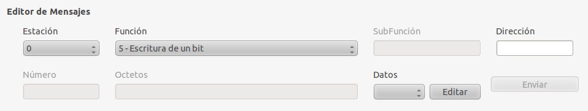
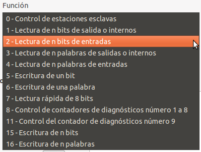
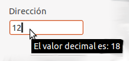
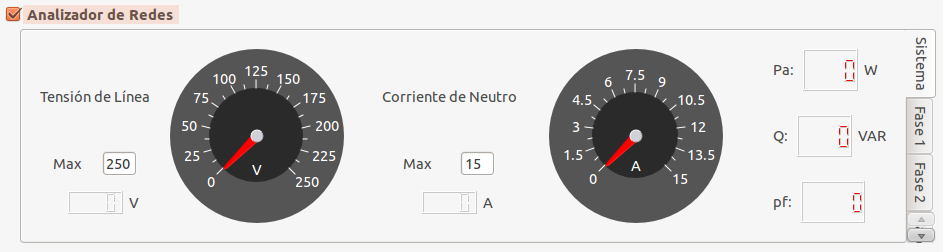
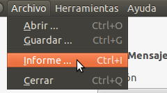
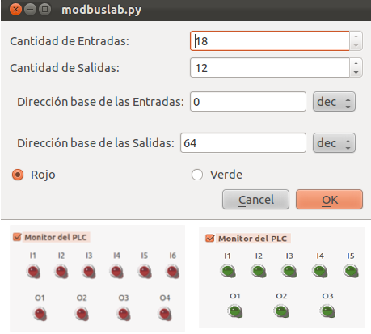

Orientaciones para el laboratorio de Modbus
El mapeo de memoria del PLC
Master-k120s se puede encontrar en la página 8-59 del documento
Master-k-Comm.pdf
y para el analizador de redes en la página 7 del documento
WM14BXCPv2r0ENG0804.pdf.
Tareas:
Se pide una variante por estudiante que
debe verse en el documento Variantes.pdf.
Usted deberá ejecutar las siguientes acciones:
PLC
Escribir 1
en un bit (Encender/Apagar )*.
Leer un bit
(Encender/Apagar ).
Escribir 0
en un bit (Encender/Apagar ).
Leer un bit
(Encender/Apagar ).
Leer varias
entradas en una sola lectura (Leer Entradas ).
Escribir el
valor 5555hex a partir de la dirección dada (Dirección Base ).
Leer un
registro de salida en la dirección P00.
Analizador
Leer en
lecturas individuales las magnitudes dadas (Lecturas individuales ).
Leer 4
registros a partir de la dirección dada (Dirección Base ).
* Entre paréntesis
se muestra la columna que contiene la información para su variante.
El
estudiante debe traer al laboratorio elaborado los mensajes que va a
enviar, por ejemplo:
|
Acción
|
Mensaje
|
|
Activar la salida P4C
|
Esclavo
|
Función
|
Dirección
|
Dato/Cantidad
|
|
2
|
05
|
 04C0
04C0
|
FF00
|
|
Leer la energía del analizador
|
1
|
04
|
02C6
|
1
|

El software
ModbusLab se presenta como puede verse en la figura 1.

Figura
1: Ventana principal de Modbuslab.
En la figura 2 se
muestra el área para la configuración del puerto serie. En esto es
suficiente con dejar los valores predeterminados puesto que así han
sido configurados todos los nodos de la red.

Figura
2: Configurador del puerto serie.
El editor de mensajes se puede ver en la
figura 3. El primer campo hacer referencia a la dirección del
esclavo con el que se establecerá la conexión (Estación). El
segundo campo determina la función del mensaje (véase en detalle en
la figura 3) y determina los campoes que estarán activos e
inactivos. Es importante notar que todas la entradas numéricas son
de valores hexadecimales, el valor decimal será siempre accesible en
un tip como puede verse en la figura 5.

Figura
3: Editor de mensajes.

Figura
4: Selector de la función modbus.

Figura
5: Entrada numérica.
El monitor del analizador de redes nos permite conocer todo el
tiempo los valores medidos por el equipo como se muestra en la figura
6. La escala de los instrumentos de aguja se puede modificar a través
de una entrada numérica como indica la figura 6.

 Figura
6: Monitor del analizador de redes.
Figura
6: Monitor del analizador de redes.
En el menú
herramientas podemos encontrar la utilidad para configuración del
PLC como se en la figura 8. Esta interfaz nos permite definir el
número de entradas y salidas así como la dirección base de las
mismas en la memoria del PLC. En este caso la base numérica puedes
ser decimal o hexadecimal según sea más conveniente. Esta
configuración hace flexible al programa para interactuar con
cualquier autómata. Se puede escoger el color para la visualización
de los leds como se muestra en la figura 8.
Una vez terminado
el laboratorio el software permite generar un informe con el menú
que se muestra en la figura 7.

Figura
7: Menú para generar informe.

Figura
8: Configurador del PLC